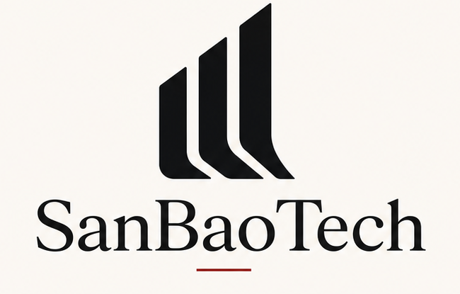
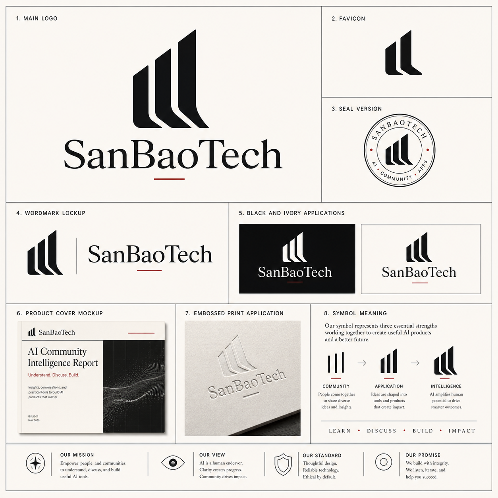

Workflow Map
running
Enterprise AI Deployment OS
三宝国 SanBaoTech
把 AI 接进 企业真实流程。
三宝国为企业建设可部署、可观测、可持续迭代的 AI 生产力系统，覆盖内部提效、Forward Deployed Engineering、AIGC 内容生产与 Hermes Agent 工程。
4
AI implementation lanes
FDE
forward deployed engineering
Hermes
agent orchestration system
SanBaoTech Hermes Console
live workflow
Model Router
92%
按任务选择模型、工具和上下文窗口。
Evaluation
pass
Brand
Risk
Source
上线前完成质量、权限和事实检查。
AI Business Stack
不是做演示， 而是建设 企业 AI 操作系统。
三宝国把 AI 能力拆成可以进入组织的四条业务线：效率、现场、内容、Agent。每条线都必须有业务入口、系统接口、评估指标和运营节奏。
企业内部 AI 提效
面向岗位和部门的 Copilot、知识问答、流程自动化和数据分析助手。
FDE 业务落地
进入业务现场，把 AI 原型接入真实系统、流程、权限和团队习惯。
AIGC 内容生产
构建品牌语料、选题、脚本、视觉、视频分镜和多平台发布流水线。
Hermes Agent 工程
设计任务规划、工具调用、知识检索、执行反馈和质量评估的 Agent 系统。
Forward Deployed Engineering
AI 只有进入现场， 才会变成生产力。
我们从业务问题、工作流和系统接口开始，而不是从模型炫技开始。Forward Deployed Engineer 负责把每一个 AI 场景变成可上线、可维护、可复盘的工程。
Discover
场景访谈 / 数据边界 / 成本收益
Prototype
工作流原型 / 工具接入 / 人机边界
Deploy
权限 / 日志 / 监控 / 培训
Operate
评估 / 迭代 / 指标复盘

Hermes Agent EngineeringAgent Orchestration
Hermes 不是聊天机器人， 是企业任务调度系统。
它把规划、检索、工具调用、人工确认、质量评估和运行日志组织起来，让 Agent 能处理真实业务，而不是停留在一次性回答。
- 多 Agent 分工与任务路由
- 企业知识库和权限上下文
- 工具调用、审批节点和回滚机制
- 评估集、日志、监控与持续迭代
企业 AI 必须先进， 也必须可控。
三宝国的交付不只看生成效果，也看数据边界、事实依据、人机协作、质量评估和长期维护。先进性必须服务于可被企业信任的运行系统。
Governance
权限、审计、敏感信息边界
Evaluation
任务成功率、事实性、品牌一致性
Human Gate
关键节点人工确认和责任归属
Observability
日志、指标、成本和版本追踪
Brand System
SanBaoTech 的标志语言： 理解、构建、放大。
三段上升结构被重新解释为 Learn / Build / Compound：先理解业务现场，再构建 AI 工作流，最后放大组织生产力。

Start With One Workflow